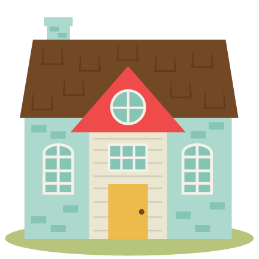

BEACH BODY
Help
There's been a murder in the resort!
It is up to you to solve who did it. Click on different sections of the resort to interview suspects and find clues by paying close attention in the search scenes!
CLICK AGAIN TO CLOSE
Restart

Your browser does not support the audio element.